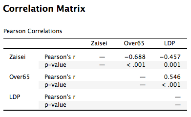

JASP入門: 相関分析
今回は相関係数の算出と散布図の作成のやり方を紹介します。使用するデータはこれまで主に使ってきたJASP_Sample.csvデータです。
各都道府県の財政力指数、65歳以上人口比、自民党の得票率の相関係数と散布図を作成してみましょう。

- 分析メニューの「Regression」から「Correlation Matrix」を選択します。
- 相関係数を算出する変数を投入します。相関係数は連続変数と順序変数のみ計算可能です。今回は財政力指数 (
Zaisei)と65歳以上人口比 (Over65)、自民党の得票率 (LDP)を選択し、右の変数リストへ移動させます。
- つづいて、下の「Correlation Coefficients」を見てみましょう。基本的には「Pearson」にチェックされていますが、今回は全ての変数が連続変数なのでこのままにしておきます。
- 順序変数同士の場合は「Spearman (スペアマンの順位相関係数)」が「Kendall’s tau-b (ケンダルの順位相関係数)」を選択します。
- 順序変数と連続変数同士なら好みによりますが、筆者なら順位相関係数を使います。全てにチェックを入れてみて、結果を比較してみるのもいいでしょう。
- づぎは、「Plot」です。基本的にはチェックが入っていませんが、今回は全てチェックします。

- まず、相関係数からです。読み方としては列と行がクロスするところです。対角線上は同じ変数同士なので常に相関係数は1であり、省略されています。また対角線の下は上と対称なので、ここも省略ですね。
- たとえば、「
Zaisei」と「LDP」の相関係数は-0.457であり、p値は約0.001です。つまり、財政力指数が高い都道府県ほど、自民党の得票率が低いことを意味し、この相関関係は統計的に有意な関係と言えます。 - 同じく、「
Over65」と「LDP」の相関係数は0.546、p値は0.001未満ですね。ここもまた、高齢者が多い都道府県ほど、自民党の得票率は高いことを意味し、統計的に有意な関係が確認できます。
- つづいてプロットですね。まず、対角線上は各変数のヒストグラムです。これは先ほど「Plot」で「Densities for variables」をチェックすることで表示されます。
- 対角線上の上は散布図です。「
Zaisei」と「Over65」の散布図を見ると負の関係が見られますね。 - 対角線上の下は相関係数です。「
Zaisei」と「LDP」の相関係数は-0.457ですね。先ほどの表の結果とも一致します。